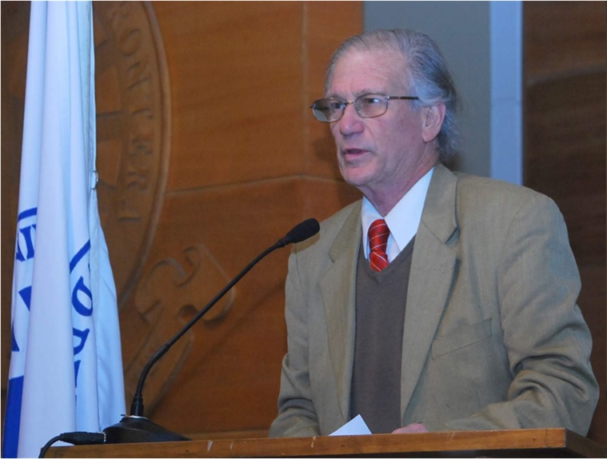
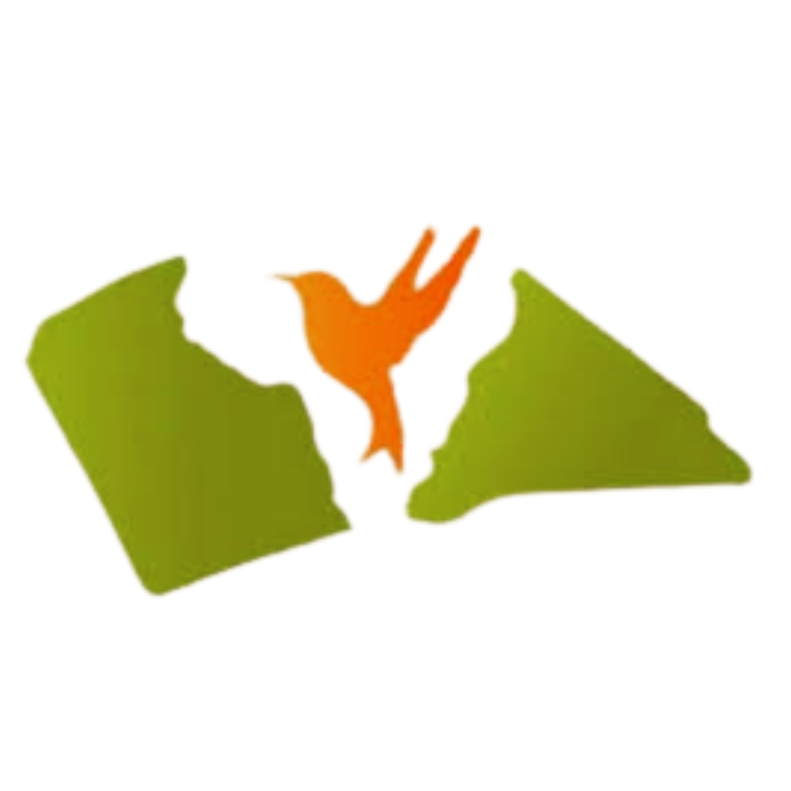
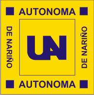

ACERCA DE PIRI
34 años de historia conectando la academia con el territorio rural
Nace en 1991 en la UFRO
Dr. Jaime Serra Canales (1937-2010), Médico Cirujano y Pediatra de la Universidad de Chile, especialista en Salud Pública. Académico de la Universidad de La Frontera desde el año 1987, se desempeñó como director del Departamento de Salud Pública entre los años 1988 y 2010. Primer director del Magíster de Salud Pública Comunitaria y Desarrollo Local, iniciado el año 2009.
Formó parte, durante su exilio en Costa Rica, del Programa Hospital Sin Paredes, galardonado por la OMS con el Premio Mundial de Atención Primaria en Salud en el año 1999.
Líder y fundador del Programa Internado Rural Interdisciplinario, PIRI, experiencia iniciada en 1991 que ha logrado integrar a las diferentes carreras de la Facultad de Medicina, Odontología, Educación, Ciencias Sociales y Humanidades e Ingeniería y Ciencias, haciendo Universidad en el territorio sur de Chile con una mirada de compromiso social con la realidad local y regional, alcanzando un reconocimiento nacional e internacional.

Dr. Jaime Serra Canales (1937-2010), fundador del programa en 1991
Trayectoria del programa
Fundación del PIRI en UFRO, Chile
Premio Mundial de Atención Primaria en Salud - OMS
Firma del primer convenio con Universidad de Nariño
34 años de trayectoria y nuevo capítulo en Nariño
Historia de PIRI en Nariño

2010: PIRI llega a Nariño
En 2010 se firma el primer convenio para implementar el Programa de Interacción Rural Interdisciplinario en Nariño, bajo una metodología que fomenta la conformación de equipos de trabajo interdisciplinario e interinstitucional en territorios.
Primeros estudiantes en territorio
El territorio PIRI en Nariño
El programa se asentó en uno de los territorios más emblemáticos de Nariño: La Laguna de la Cocha, corregimiento El Encano. Este santuario de biodiversidad y riqueza cultural fue el escenario donde estudiantes, docentes y comunidades tejieron los primeros lazos de interacción rural.
Un territorio de páramos, lagunas y saberes ancestrales que marcó el carácter del programa en la región.
Actores del Territorio
Comunidad y Territorio
Centro de la acción PIRI
Academia
Estudiantes · Profesores
ONG / Cooperación
Organizaciones sociales
Institucionalidad
Sector público
Comunidad Organizada
Asociaciones
La metodología PIRI articula a todos los actores del territorio en un diálogo horizontal de saberes, generando sinergias para el desarrollo rural sostenible.
Fases de la metodología
Aprestamiento
Preparación y sensibilización de equipos y comunidades
Análisis situacional
Diagnóstico participativo del territorio
Planeación
Diseño colaborativo de intervenciones
Implementación
Ejecución de actividades en territorio
Evaluación
Sistematización y retroalimentación
Metodología aplicada en el corregimiento de El Encano
Articulación interinstitucional
Universidad de Nariño
Universidad Mariana

Corporación Escuela del Sur

Universidad Autónoma de Nariño
Principales líneas de acción
Redes y Alianzas Comunitarias
Emprendimiento sostenible
Adaptación al cambio climático
Educación Ambiental Ecoturismo
Arte como movilizador de paz
Salud Comunitaria
Desarrollo y fortalecimiento de capacidades
Pasantías internacionales
| Ítem | Participantes Totales | Udenar | U. Mariana | U. Autónoma |
|---|---|---|---|---|
| Pasantes y Voluntarios Nacionales | 39 | 25 | 4 | 10 |
| Experiencias de Intercambio internacional Estudiantil | 18 | 10 | 2 | 6 |
| Experiencias de Intercambio internacional Docente | 3 | 1 | 1 | 1 |
| Experiencias de Intercambio internacional Profesional | 1 | 1 | 0 | 0 |
| Docentes Asociados al programa PIRI | 9 | 3 | 3 | 3 |
| Tesistas | 3 | 3 | 0 | 0 |
| Voluntarios extranjeros | 4 | - | - | - |
Distribución de participantes por universidad
Logros del programa
Estudiantes
- Intercambio de conocimientos
- Movilidad estudiantil
- Interdisciplinariedad
- Sensibilidad social
- Metodologías Participativas
- Capacidades Investigativas en contexto
- Retroalimentación comunitaria
Profesores
- Movilidad académica
- Excelencia en contexto
- Gestión interinstitucional
- Orientación a la Investigación
- Interinstitucionalidad
- Evaluación y seguimiento
Investigación
- Investigación territorial
- Interdisciplinariedad
- Participación Comunitaria
- Evaluación de impacto
- Investigación Binacional
- Publicaciones académicas
Pertinencia e impacto social
- Universidad articulada a la Región
- Alianzas estratégicas
- Desarrollo rural e integral
- Interacción Campesina – Indígena
- Evaluación y seguimiento
Esquema de sistematización PIRI Nariño 2014-2018
I CAPÍTULO
Contexto: País · Departamento · Municipio · Corregimiento
- Corporación Escuela del sur
- Universidad de Nariño
- Universidad Mariana
- Universidad Autónoma de Nariño
II CAPÍTULO
- ¿Qué es?
- ¿Porqué y Para Qué?
- ¿Cómo se desarrolla?
IV CAPÍTULO
Acompañamiento · Proceso PIRI Urbano
ARTESANÍAS
DECORAZON (Lucy Egas)
ARTECHACAPAMBA (Clara Esther)
SALUD
UYARY (Martha Vela)